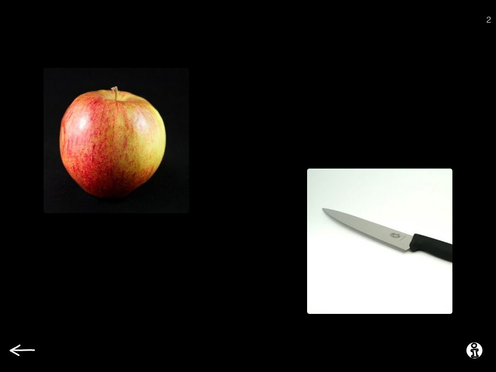
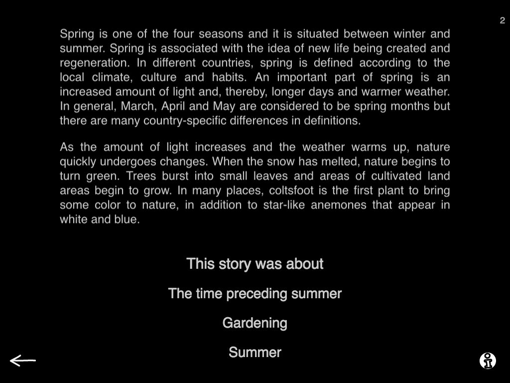
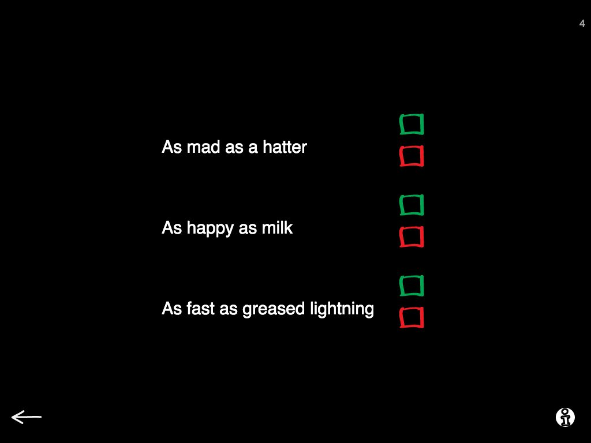

Are you a creature of habit?
I know I am! When I establish a nice routine it tends to stick and I easily forget to look for better or just different solutions, to explore my options.
At work this often means using the same materials over and over again. And sometimes the new, refreshing idea to so close we forget it is there. If you use Sanapsis you probably have a few favourite things you use it for. For me, the top three look like this:

Production - Create a sentence around words

Comprehension - Listen to a story

Semantics - Is this simile true
Favourites are favourites for a reason. For me, I believe the catch is that these exercises are super versatile and I can target loads of things within the task (just take a look at the instructions in each exercise and you find multiple variations for tasks and goals).
But I should explore the app more often to refresh my ideas! Some of the exercises also have hidden gems when you look closely. A great example is Give instructions is Production category. In this task Level 1 has straightforward tasks for building a sequential, coherent story, like e.g. Explain how to boil potatoes. But level 2 has a fantastic twist - it provides similar tasks, but with problem solving! Here is an example: Paul left his wallet at home and needs to buy lunch at work. Tell him what to do.
And when I am only using my favourite ones, I forget about these gems - and that is just waisting potential. To encourage you to explore Sanapsis more often I am planning on writing a small series of posts on what our categories actually include in the coming posts. So stay tuned and never stop exploring!